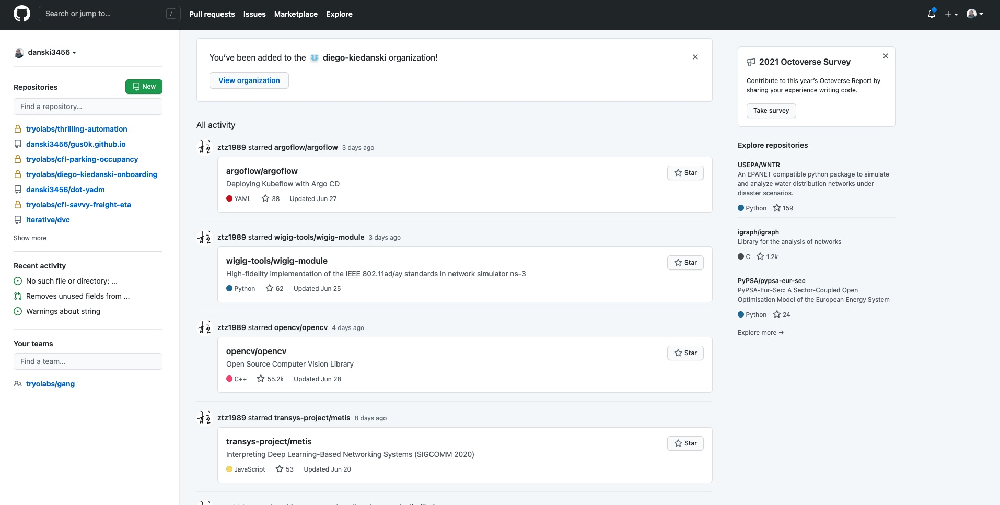

Diego Kiedanski
1 Agosto, 2021
Al escribir código, como con cualquier otro documento colaborativo, nos gustaría:

FROM ubuntu:lastest RUN pip install -y matplotlib pandas seaborn jupyter CMD ["jupyter-notebook"]